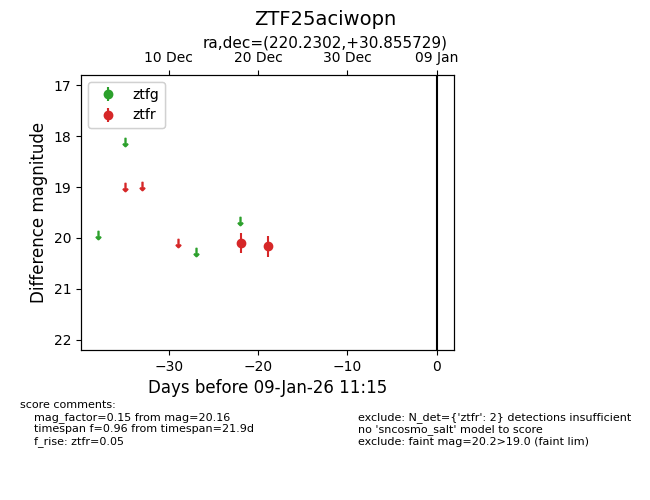
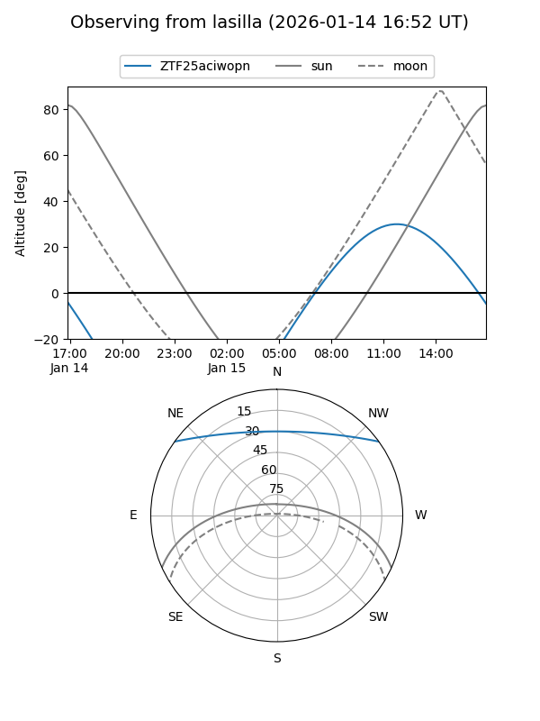
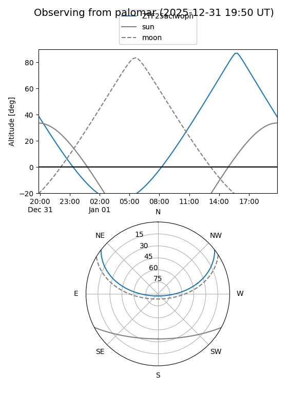
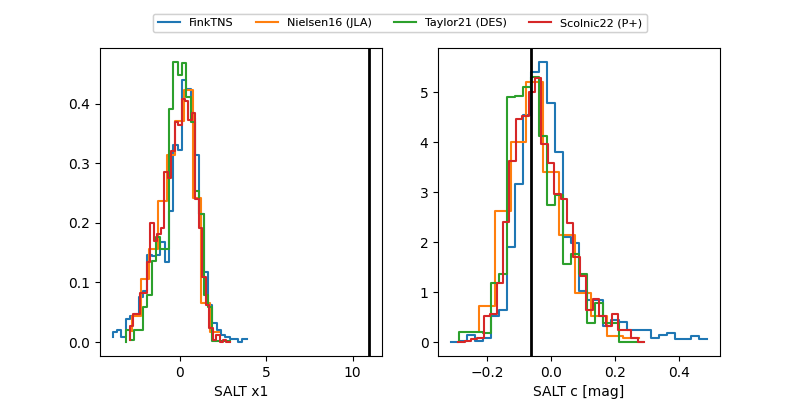

ZTF25aciwopn
Target ZTF25aciwopn at 2025-12-18 15:42
Aliases and brokers:
FINK: fink-portal.org/ZTF25aciwopn
Lasair: lasair-ztf.lsst.ac.uk/objects/ZTF25aciwopn
ALeRCE: alerce.online/object/ZTF25aciwopn
alt names
ZTF25aciwopn (ztf,fink_ztf)
Coordinates:
equatorial (ra, dec) = 220.2302,+30.85573
equatorial (HMS+DMS) = 14:40:55.24,+30:51:20.62
galactic (l, b) = (48.3483,+65.83256)
Photometry
last ztfr=20.11
1 ztfr detections
Lightcurve

Visibility


Additional plots
